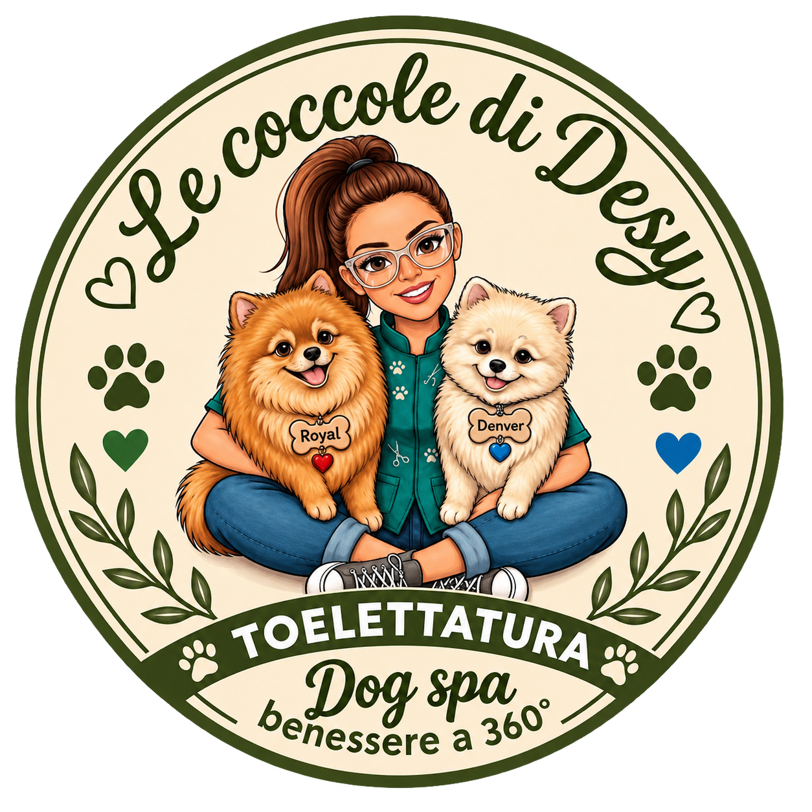
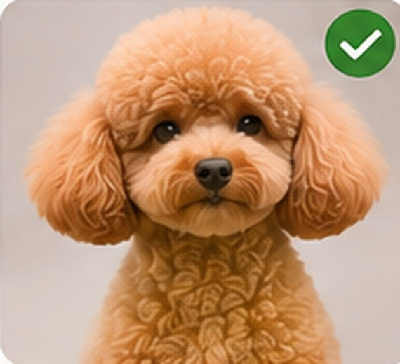

📷 Il tuo cane
Scatta una foto o sceglila dalla libreria per vederla qui.
Fotografia originale, non modificata.

Una passione speciale per i Pomerania
Ogni cane merita attenzioni su misura. Scopri il catalogo dei tagli e prepara la sua scheda fotografica.
Seleziona una razza per esplorare le proposte dedicate.
Immagini illustrative generate con AI, realizzate per il catalogo dimostrativo. Non sono fotografie reali. Catalogo selezionato di 19 voci. Le immagini illustrative non rappresentano necessariamente un taglio realizzato.
Seleziona il taglio che preferisci per preparare la tua scheda.
Carica la fotografia del tuo cane e consulta il taglio selezionato. Alcuni riferimenti fotografici sono ancora in preparazione.
Fotografia originale, non modificata.

Scegli un taglio per vedere la fotografia di riferimento.
Carica una foto e conserva le tue preferenze per la consulenza in negozio.
La foto rimane nel browser: non viene caricata online.
Pronta da mostrare o stampare in negozio.
Il risultato effettivo dipende dal tipo di mantello e dalle esigenze di benessere del cane.